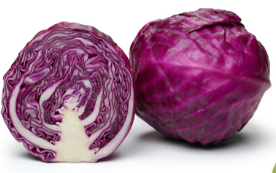

Cabbage Corp, the best cabbages
Cabbage Corp produces the best organic cabbages in town. There are no cabbage slugs in our cabbages!
Cabbage Corp has a huge varity of cabbages.
Bok-Choy, ideal for your stir-fry, roasting, and grilling!
Copenhagen-Market-Early, these large leaves can be used as tortillas and shredded for salad, cole slaw, and grain bowls.
Golden Acre, this Cabbage can be used for cole slaws, tacos, sauerkraut.

Purple Cabbage, this colorfull cabbages can be used in tacos, rice paper dumplings, cole slaws.
Cabbage corp has the best cabbages in town!
- General Iroh
Get your Cabbages now!
Sign up now, supply is limited!